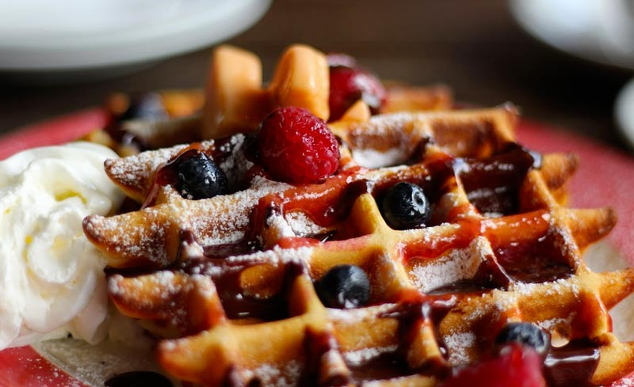

Ingredient
- 400 g flour
- 150 ml milk
- 150 g pearl sugar
- 1 sachet of vanilla sugar
- 200 g of soft butter
- 2 whole eggs
- 25 g fresh baker's yeast
- Un peu de sel
Preparation steps
- In a saucepan, warm the milk. Then dilute the yeast in the milk, making sure it is not too hot.
- Pour the flour into a bowl. Add the vanilla sugar, salt, whole eggs and finally the mixture of milk and yeast. Knead everything for at least 5 minutes
- Cover the dough with a clean cloth and let swell for at least half an hour
- Once the time is up, add the soft butter and knead the Belgian waffle dough again by hand (avoid melted butter so that the dough is not sticky.
- Incorporate the pearl sugar into the dough. Take the time to mix well. Then divide your dough into 12 small balls
- After a quarter of an hour's pause (to rise in volume), the waffle dough is ready to bake